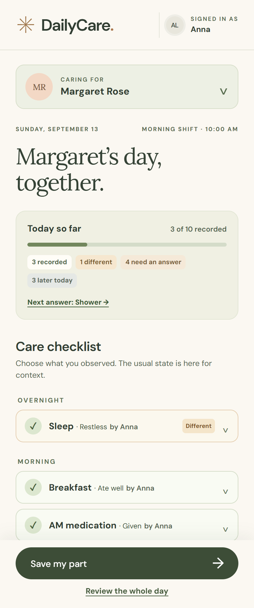
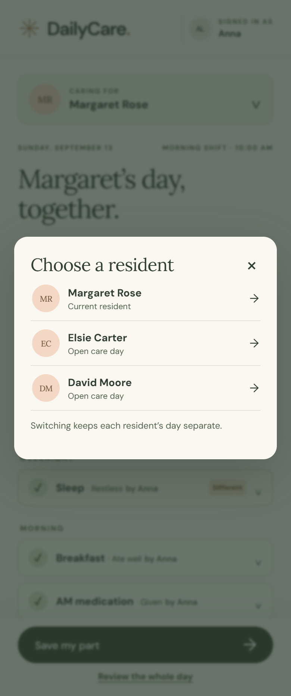
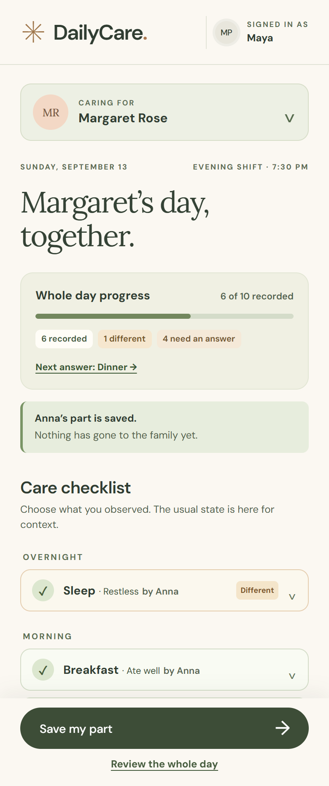
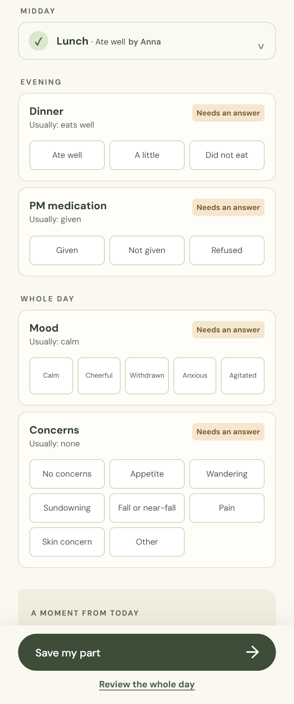
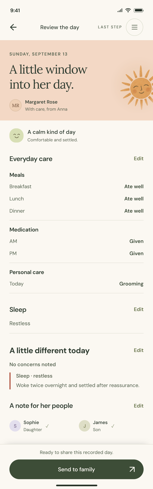
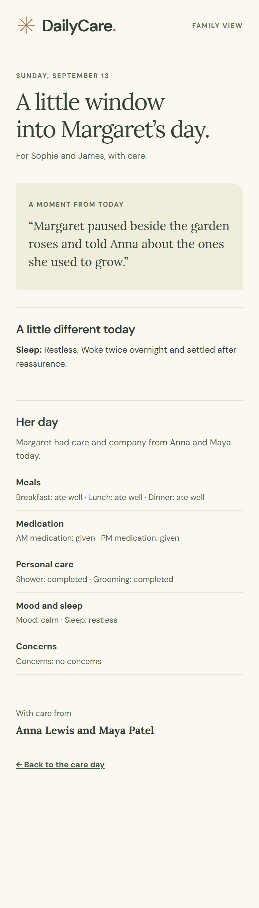
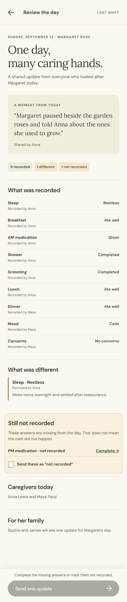
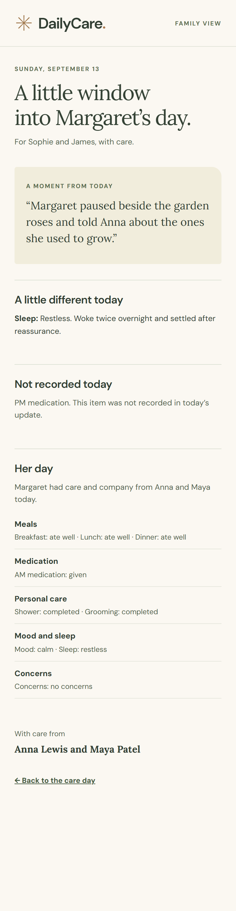
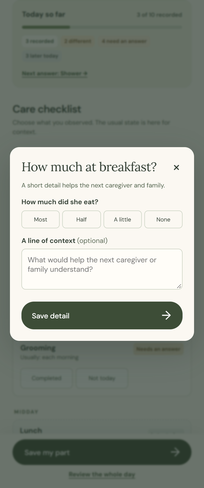

Morning checklist
ANNA · 10:00 AM

The progress panel distinguishes what is recorded, different, due now and later. Usual states remain text only.
Caregivers record their own observations through the day. Their work becomes one accurate, warm update for Margaret’s family.
One resident, two caregivers, answers that belong to each shift.
ANNA · 10:00 AM

The progress panel distinguishes what is recorded, different, due now and later. Usual states remain text only.
CAREGIVER’S RESIDENTS

The resident list opens beside Margaret’s name. The caregiver’s identity has its own place in the header.
ANNA → MAYA

Anna saves her part without sending. Maya sees Anna’s attributed summaries and the work left for her shift.
MAYA · 7:30 PM

Items due now show their choices. Shower and grooming are separate. Mood follows the requested label order.
The review and family view show the same fully recorded day.
COMPLETED + DIFFERENT

Every meal, medication status, personal care answer, mood and concern matches the entry. Restless sleep keeps Anna’s note.
ONE WARM UPDATE

A real moment leads the story, followed by what changed, the care record and both caregivers’ names.
An alternative day, with PM medication left unanswered in both screens.
COMPLETE OR MARK NOT RECORDED

The last caregiver can return to PM medication or explicitly mark that answer not recorded.
THE GAP STAYS VISIBLE

The family update carries that exact gap forward without implying that the care did not happen.
Follow-up detail appears only after the first answer.
MEAL + AMOUNT + CONTEXT

The sheet identifies the meal, asks how much she ate, and allows one useful sentence.
A SMALL, CONSISTENT LANGUAGE
Sage summaries close answered items and name the caregiver.
Warm open cards keep choices visible for the active shift.
Muted cards prevent an evening task from reading as a morning omission.
Short rationale for the interaction.
Usual behavior gives context. It never fills an answer or confirms that everything was the same.
Each caregiver can save their part. The next caregiver sees who recorded what and opens the items still due.
The final review preserves changes and gaps. The family receives one day that names the people who cared for the resident.